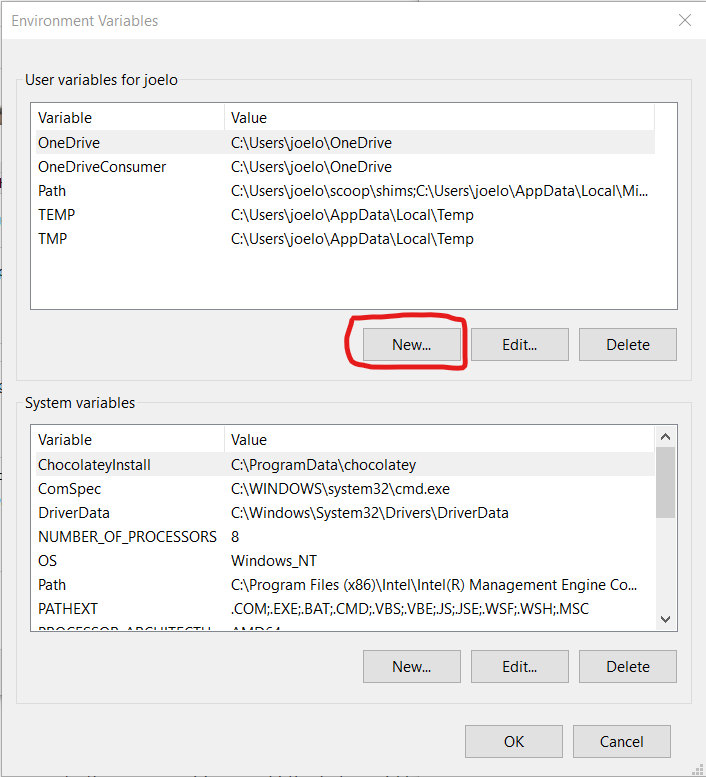

Windows Software Stack#
These instructions will walk you through installing the required software stack for PHYS 111. Before starting, ensure that your laptop meets the minimum requirements:
Runs the latest version of Windows 10 or 11 available for your system.
Currently enrolled UBC students with a valid CWL account qualify for one license of Windows 11 Education.
Can connect to networks via a wireless connection.
Has at least 25 GB disk space available.
Has at least 4 GB of RAM (more is recommended).
Uses a 64-bit CPU.
Is at most 6 years old at the start of the program (4 years old or newer is recommended).
Student user has full administrative access to the computer.
If your computer does not meet any of the requirements above, please don’t just drop the course!! Let me know first and we can discuss alternate possibilities so you can still take the course.
Tip
Before starting, I suggest updating your Windows operating system to the latest version your laptop can run:
See here on how to update your Windows 11 machine to the latest version.
Installation notes#
Unless you really know what you are doing, if you have already installed Git, Conda, or any of the Python related packages below, I strongly advise you to please uninstall these and follow the instructions below to re-install and configure them correctly (make sure to also remove any user configuration files and backup them if desired). In order to be able to support you effectively and minimize setup issues and software conflicts, we suggest students to install the software stack the same way (even though there are better ways).
In all the sections below, if you are presented with the choice to download either a 64-bit (also called x64) or a 32-bit (also called x86) version of the application always choose the 64-bit version.
Once you have completed these installation instructions, make sure to follow the post-installation notes at the end to check that all software is setup correctly.
Table of Contents#
UBC Student Email#
Please sign up for a UBC Student Email. This account will also grant you access to a range of other UBC services (not used in this course), including Microsoft Teams and OneDrive. To do so navigate to https://it.ubc.ca/services/email-voice-internet/ubc-student-email-service and follow the instructions under “Get Started”.
Web browser#
You are welcome to use most modern browsers that have a WebKit or Gecko backend. Safari, Firefox, Vivaldi, Brave, Edge are all recommended. Google Chrome is not recommended because of the well-documented privacy and tracking issues with Google.
Zoom#
We will be using Zoom in this course for the classes, as well as the labs, and student hours. It is very important that you have the most recent version of Zoom installed, as we will be using many of the features that are only available in more recent versions.
The latest version of Zoom as of Sept 2022 is: 5.11.10 (102279).
You can ensure you have the latest version of Zoom by clicking “Check for Updates” as shown in the screenshot below (on a Windows machine, your screenshot will look slightly different).

Important
Please note that if you have been relying on the “web version” of Zoom that works only in a browser, this will not work for this course! Please make sure to download the Zoom desktop client for your operating system to fully participate in the course.
GitHub.com account#
Sign up for a free account at GitHub.com if you don’t have one already. Your GitHub username is important, here’s how to find your username:

Microsoft Office#
UBC students have free access to a Microsoft Office 365 annual subscription, which is renewed for students enrolled in at least one course. Office 365 includes Word, Excel, PowerPoint, Outlook, and OneNote, and is available on a variety of platforms.
To get your free Office 365 license and download the installer files, visit UBC IT for the installation instructions. Note that you will need your CWL login credentials in order to download the software and activate your license from portal.office.com.
In this course, you will only need Microsoft Excel, but you’re welcome to install other apps as well.
Important
You will not be able to use Google Sheets, Apple Numbers, or LibreOffice Calc to do the Excel portion of this course. If you have trouble installing it, please let the instructor know.
Terminal (GitBash)#
Unfortunately, one of the major problems with using the Windows operating system is that the “Command Prompt” that comes with the operating system is severely deficient. No worries though, luckily most of the tools we use in this course are open source, so the community has worked hard to shore up deficiencies in the Microsoft ecosystem (until Windows subsystem for Linux is a more mature product).
The replacement for the Command Prompt we will use in this course is called “GitBash”.
The latest version of GitBash for Windows is: 2.37.3.
Attention
“GitBash” is relatively old software, but it is very reliable and works very well.
If you are feeling brave and want to setup zsh (the next generation Terminal, with many improvements) on Windows, you can try these instructions here.
Note that these instructions are experimental and support from the teaching team is limited. But if you can get it to work or run into any issues, let me know.
I hope to adopt zsh on windows fully next time I teach this course.
Briefly, we will be using the Bash shell to interact with our computers via a command line interface, and Git to keep a version history of our files and upload to/download from to GitHub.
Go to https://git-scm.com/download/win and download the windows version of GitBash. After the download has finished, run the installer and accept the default configuration for all pages except for the following:
On the Choosing the default editor used by Git page, select “Use Visual Studio Code as Git’s default editor” from the drop-down menu’
Optional On the Select Components page, check “On the Desktop” under “Additional icons”.

Note
If you wish to pin Git Bash to the taskbar, you need to search for the program in the start menu, right click the entry and select “Pin to taskbar”. If you instead first launch the program and pin it by right clicking on the taskbar icon, Git Bash will open with the wrong home directory (/ instead of /c/users/$USERNAME.
Note
After installation, test if you were successful by opening the GitBash program. Below is a picture of the Git Bash icon on the Desktop and an opened instance of the Git Bash terminal (we will often refer to this as just the “Terminal”). From now on, all commands should be entered into the GitBash program (not Anaconda Command Prompt, or Command Prompt, or PowerShell etc…).

In the terminal, type the following to check which version of Bash you just installed:
bash --version
The output should look similar to this:
GNU bash, version 4.4.23(1)-release (x86_64-pc-sys)
Copyright (C) 2019 Free Software Foundation, Inc.
License GPLv3+: GNU GPL version 3 or later <http://gnu.org/licenses/gpl.html>
This is free software; you are free to change and redistribute it.
There is NO WARRANTY, to the extent permitted by law.
If you tried to paste the above into the Git Bash terminal, you will have noticed that
Ctrl+Vdoes not work in Git Bash. Instead you need to right click and select “Paste” or use theShift+Insertshortcut. To copy from the Git Bash terminal you simply select the text you want and it is copied automatically.
Via right click you can also reach the settings menu where you can configure Git Bash to your preferences, a couple of tips would be to check “Mouse -> Clicks place command line cursor” and change the font to something more legible, e.g. Consolas (“Text -> Select”).
Let’s also check which version of git was installed:
git --version
git version 2.32.0.windows.1
Visual Studio Code#
The open-source text editor Visual Studio Code (VS Code) is both a powerful text editor and a full-blown Python IDE, which we will use for more complex analysis. You can download and install the Windows version of VS Code from the VS code website https://code.visualstudio.com/download. Once the download is finished, double click it to open and follow the installation instructions. Make sure you are able to open VS Code by clicking on the application.
Python#
We will be using Python for a large part of the course, and conda will be our Python package manager.
Installing conda and python#
We will be using Python for a large part of the program, and conda as our Python package manager.
To install Python and the conda package manager, we will use the Miniconda platform (read more here), for which the Python 3.9 (or higher) 64-bit version can be downloaded here.
Miniconda also provides us with a minimum number of useful packages so installation is quick, and relatively painless.
After the download has finished, run the installer and accept the default configuration for all pages.
Warning
Make sure to check the box to add Miniconda to the PATH. There is a big scary warning that says this is “Not Recommended” ; you can ignore that warning, and make sure that checkbox is clicked!
After the installation is complete, open the Start Menu and search for the program called “Anaconda Prompt (miniconda3)”.
When this opens you will see a prompt similar to (base) C:\Users\your_name.
Type the following to check that your Python installation is working:
python --version
which should return something like this:
Python 3.9.5
If instead you see
Python 2.7.Xyou installed the wrong version. Follow these instructions to delete this installation and try the installation again, selecting Python 3.9.
Integrating Python with the Git Bash terminal#
Warning
This part is very important!!!
To avoid having to open the separate Anaconda Prompt every time we want to use Python, we can make it available from the (Git Bash) terminal, which is what we will be using most of the time. To set this up, open the “Anaconda Prompt (miniconda3)” again and type:
conda init bash
You will see that this modified a few configuration files, which makes conda visible to the terminal. Close all open terminal windows and launch a new one, you should now see that the prompt string has changed to include the word (base) as in the screenshot below:

If you type
python --version
you should now see the same output as above (you may see a higher version of python, that’s fine:
Python 3.9.5
Note that if you want to run Python interactively from the Git Bash terminal, you need to prepend the
winptycommand, so the full command would bewinpty python(if you run this, note that you can exit the Python prompt by typingexit()). Running justpythonworks on other setups, but will freeze the Git Bash terminal.
Let’s also check the version of the conda package manager. If you type
conda --version
you should see something like this
conda 4.12.0
Optional One annoyance with our current terminal setup is that the word
(base)is not on the same row as the rest of the prompt string (the part withyour_name@your_computer. To fix this we can edit the.bash_profileconfiguration file to indicate that we do not want a newline at the beginning of the prompt string. Open up the configuration file using VS Code by typing the following command into a terminal:code "/c/Program Files/Git/etc/profile.d/git-prompt.sh"Delete the line that reads the following (it should be line 13):
PS1="$PS1"'\n' # new lineClick to save the file, when VS Code prompts you that the saving failed, click “Retry as Admin” and then “Yes”. That’s it! Now if you launch a new terminal instance, you will see
(base)on the same line as the rest of the prompt string as in the screenshot below.

Essential Python packages#
conda installs Python packages from different online repositories which are called “channels”.
A package needs to go through thorough testing before it is included in the default channel, which is good for stability, but also means that new versions will be delayed and fewer packages are available overall.
There is a community-driven effort called the conda-forge (read more here), which provides more up-to-date packages.
To enable us to access the most recent versions of the Python packages we are going to use, we will add this channel.
To add the conda-forge channel type the following in a Terminal window:
conda config --add channels conda-forge
To install packages individually, we need to use the following command: conda install -c conda-forge "<package-name>".
The part about conda install tells the conda package manager to install a particular package, and the -c part is an extra “option” that tells conda to look in the conda-forge channel (which usually has the latest updated packages).
Let’s install the key packages needed (you will note that we’re also specifying certain versions of the package with = X.Y).
You should copy and paste each line below in your Terminal to install the following packages:
conda install -c conda-forge "jupyterlab=3.*"
conda install -c conda-forge "numpy=1.*"
conda install -c conda-forge "pandas=1.*"
conda install -c conda-forge "black=19.*"
conda install -c conda-forge "nbconvert=6.*"
conda install -c conda-forge "seaborn"
conda install -c conda-forge "pre-commit"
conda will show you the packages that will be downloaded, and you may need to press enter or Y (for yes) to proceed with the installation.
We are specifying that we should use the “conda-forge” source because it typically has more recent and updated package versions.
This may take a while to complete.
VSCode extensions#
The real magic of VS Code is in the extensions that let you add languages, debuggers, and tools to your installation to support your specific workflow. Now that we have installed all our other Data Science tools, we can install the VS Code extensions that work really well with them. From within VS Code you can open up the Extension Marketplace (read more here) to browse and install extensions by clicking on the Extensions icon in the Activity Bar indicated in the figure below.

To install an extension, you simply search for it in the search bar, click the extension you want, and then click “Install”. There are extensions available to make almost any workflow or task you are interested in more efficient! Here we are interested in setting up VS Code as a Python IDE. To do this, search for and install the following extensions:
PythonPython Extension Pack(for notebooks, debugging, linting, formatting, etc.)markdownlint(markdown linting and style checking extension)

This video tutorial is an excellent introduction to using VS Code in Python.
Git and GitHub#
We will use the publicly available GitHub.com.
You should already have your GitHub.com username, you will need that for this question.
Install Git on your computer#
Although Git and GitBash are two separate programs, Git is packaged with GitBash and so you’ve already installed it. Time to configure it.
Configuring Git user info#
Next, we need to configure Git by telling it your name and email. To do this type the following into the Terminal (the same ones you used to sign up for GitHub):
git config --global user.name "YOUR NAME HERE"
git config --global user.email YOUR@EMAIL.com
Note
To ensure that you haven’t made a typo in any of the above, you can view your global Git configurations by either opening the configuration file in a text editor (e.g. via the command code ~/.gitconfig) or by typing git config --list --global.
Create your GitHub “Personal Access Token”#
This is a bit tricky, so please make sure you follow these directions carefully.
Create a Personal Access Token on GitHub.com by clicking this link: settings/tokens; make sure to COPY the token that they give you, it is basically a special password that you can use in the Terminal. Detailed steps are:
Log in to GitHub.com,
Click your picture in the top right,
Click Settings,
Click Developer Settings
Click “Personal access tokens”, set the appropriate permissions at the “repo” level (see image below):

Fig. 5 Personal Access Token settings#

Click “Generate new token”
Save this token somewhere on your computer, you will need it when you clone a private repository to your computer.
Don’t share your token with anyone and protect it like it’s your password! You will not be able to come back to this page to get your token. If you forget it, or lose it, you can just delete the token and create another one.
Clone your first repository on your computer!#
Open a GitBash Terminal window, and then run the following command:
git clone https://github.com/firasm/test.git
Hopefully, if things work, you should be able to see a new folder created at that location. We will be talking more about what exactly you did over the next week and a bit, don’t worry!
Tip
If after running the code above, you see the error message:
fatal: destination path ‘test’ already exists and is not an empty directory.
It means that you already attempted a clone before, and there is already a directory called test where you are trying to clone this repository.
You will first need to delete that directory to try again.
Open an Explorer window on your computer, navigate to the directory, right click the test directory, and then delete the directory.
Alternatively, from the command line you can try:
rm -rf test
which will “remove” the directory called “test”. The “-” is to specify additional options: r means “recursively” for all the files in the directory, and f means “force” which means don’t ask me for confirmation after deleting each file and folder.
Launch VS Code from GitBash#
You can launch many windows programs from the Bash terminal, e.g. to launch VS Code that we installed previously, you would type in code, let’s use this to check the version of vscode that we installed:
code --version
1.71
e4503b30fc78200f846c62cf8091b76ff5547662
x64
Setting VS Code as the default editor#
To make programs run from the terminal (such as git) use VS Code by default, we will modify ~/.bash_profile. First, open it using VS Code:
code ~/.bash_profile
Note: If you see any existing lines in your
~/.bash_profilerelated to a previous Python or R installation, please remove these.
Append the following lines:
# Set the default editor for programs launch from terminal
EDITOR="code --wait"
VISUAL=$EDITOR # Use the same value as for "EDITOR" in the line above
Then save the file and exit VS Code.
Most terminal programs will read the
EDITORenvironmental variable when determining which editor to use, but some readVISUAL, so we’re setting both to the same value.
Tree#
From the Tree for Windows page, “Tree is a recursive directory listing program that produces a depth indented listing of files.” This is very useful to explore your directory and file structure to figure out which files are where.
Unfortunately, Tree is not trivial to install on Windows, but it is definitely worth the 2-3 minutes it takes to install it.
The steps in detail are outlined here (with screenshots).
In brief, the steps are:
Download the Tree binaries
Unzip the file, and navigate to the
bindirectory, and findtree.exe.Move or copy the
tree.exefile to this location:C:\Program Files\Git\usr\bin.Restart GitBash and type in
tree.
Test JupyterLab#
To test that your JupyterLab installation is functional, open a new Terminal window.
Then type jupyter lab and then hit enter.
This should open a new tab in your default browser with the JupyterLab interface.
To exit out of JupyterLab you can click File -> Shutdown,
or go to the terminal from which you launched JupyterLab and hold Ctrl while pressing c twice.
You should see something like this in your browser:

You’re all done!
Python, Conda, and JupyterLab#
Python and Conda#
We will be using Python for a large part of the program, and conda as our Python package manager. To install Python and the conda package manager, we will use the Miniconda platform (read more here), for which the Python 3.8 64-bit version can be downloaded here. After the download has finished, run the installer and accept the default configuration for all pages.
Do not add miniconda to PATH. We will set this up later.
After installation, open the Start Menu and search for the program called “Anaconda Prompt (miniconda3)”. When this opens you will see a prompt similar to (base) C:\Users\your_name. Type the following to check that your Python installation is working:
python --version
which should return something like this:
Python 3.8.3
If instead you see
Python 2.7.Xyou installed the wrong version. Follow these instructions to delete this installation and try the installation again, selecting Python 3.8.
Integrating Python with the Git Bash terminal#
To avoid having to open the separate Anaconda Prompt every time we want to use Python, we can make it available from the (Git Bash) terminal, which is what we will be using most of the time. To set this up, open the “Anaconda Prompt (miniconda3)” again and type:
conda init bash
You will see that this modified a few configuration files, which makes conda visible to the terminal. Close all open terminal windows and launch a new one, you should now see that the prompt string has changed to include the word (base) as in the screenshot below:
If you type
python --version
you should now see the same output as above:
Python 3.8.3
Note that if you want to run Python interactively from the Git Bash terminal, you need to prepend the
winptycommand, so the full command would bewinpty python(if you run this, note that you can exit the Python prompt by typingexit()). Running justpythonworks on other setups, but will freeze the Git Bash terminal.
Let’s also check the version of the conda package manager. If you type
conda --version
you should see something like this
conda 4.8.3
Optional One annoyance with our current terminal setup is that the word
(base)is not on the same row as the rest of the prompt string (the part withyour_name@your_computer. To fix this we can edit the.bash_profileconfiguration file to indicate that we do not want a newline at the beginning of the prompt string. Open up the configuration file using VS Code by typing the following command into a terminal:code "/c/Program Files/Git/etc/profile.d/git-prompt.sh"Delete the line that reads the following (it should be line 13):
PS1="$PS1"'\n' # new lineClick to save the file, when VS Code prompts you that the saving failed, click “Retry as Admin” and then “Yes”. That’s it! Now if you launch a new terminal instance, you will see
(base)on the same line as the rest of the prompt string as in the screenshot below.
Essential Python packages#
conda installs Python packages from different online repositories which are called “channels”.
A package needs to go through thorough testing before it is included in the default channel,
which is good for stability,
but also means that new versions will be delayed and fewer packages are available overall.
There is a community-driven effort called the conda-forge (read more here),
which provides more up to date packages
To enable us to access the most up to date version of the Python packages we are going to use,
we will add the more up to date channel,
To add the conda-forge channel by typing the following in the terminal:
conda config --add channels conda-forge
To install packages individually, we can now use the following command: conda install <package-name>. Let’s install the key packages needed for the start of the MDS program:
conda install \
"jupyterlab=2.*" \
"numpy=1.*" \
"pandas=1.*" \
"flake8=3.*" \
"black=19.*"
conda will show you the packages that will be downloaded,
and you can press enter to proceed with the installation.
If you want to answer yes by default and skip this confirmation step,
you can replace conda install with conda install -y.
Next we will update nbconvert (which was installed with jupyterlab),
because we require a more recent version to make it work well with tinytex on Windows,
which we will install later.
To install the latest version directly from GitHub,
we need to use the pip package manager instead of conda:
pip install https://github.com/jupyter/nbconvert/archive/6.0.0a6.zip
Note: we will use many more packages than those listed above across the MDS program, however we will manage these using virtual environments (which you will learn about in DSCI 521: Platforms for Data Science).
JupyterLab setup#
We will be using the Jupytext Python package and the JupyterLab git extension to facilitate using Jupyter notebooks with Git & GitHub. Install them via the following commands:
conda install -y nodejs=10.*
pip install --upgrade jupyterlab-git
conda install -y jupytext=1.*
jupyter lab build
To test that your JupyterLab installation is functional, you can type jupyter lab into a terminal, which should open a new tab in your default browser with the JupyterLab interface.
To exit out of JupyterLab you can click File -> Shutdown,
or go to the terminal from which you launched JupyterLab and hold Ctrl while pressing c twice.

R, IRkernel, Rtools, and RStudio#
R is another programming language that we will be using a lot in the MDS program. We will use R both in Jupyter notebooks and in RStudio.
R#
Go to https://cran.r-project.org/bin/windows/base/ and download the latest version of R for Windows (4.0.2 at the time of writing). Open the file and follow the installer instructions accepting the default configuration.
After the installation is complete, we will add the R executables to the PATH variable in terminal so that you can use it without typing the full path to R each time. Open a terminal and type:
code ~/.bash_profile
Append the following line to the file
# Add R and Rscript to PATH
export PATH="/c/Program Files/R/R-4.0.2/bin/x64":$PATH
Then save the file and exit VS Code. Now you can open terminal and type
R --version
which should return something like:
R version 4.0.2 (2020-06-22) -- "Taking Off Again"
Copyright (C) 2020 The R Foundation for Statistical Computing
Platform: x86_64-w64-mingw32/x64 (64-bit)
R is free software and comes with ABSOLUTELY NO WARRANTY.
You are welcome to redistribute it under the terms of the
GNU General Public License versions 2 or 3.
For more information about these matters see
https://www.gnu.org/licenses/.
Note: Although it is possible to install R through Anaconda, we highly recommend not doing so. In case you have already installed R using Anaconda you can remove it by executing
conda uninstall r-base.
RStudio#
Download the Windows version of RStudio from https://www.rstudio.com/products/rstudio/download/preview. Open the file and follow the installer instructions.
To see if you were successful, try opening RStudio by clicking on its icon. It should open and looks something like this picture below:
Next, we will make sure that Rstudio uses the same directories as R from terminal for its configuration. To do this, we will need to set an environmental variable in Windows. First, open the start menu, type “env” and select the match that reads “Edit the system environment variables”. Click the button at the bottom that reads “Environmental Variables…”:

Under “User variable” click the “New…” button:
And type in R_USER as the “Variable name” and C:\Users\username as the “Variable value”, replacing username with your actual user name (if you don’t know your user name, look at the top of the screenshot above where it says “User variables for your_username”):
Click “OK” on all of the three windows we opened above and you’re done! If you open RStudio and R from terminal and type
.libPaths()
both should return the same values, e.g.
"C:/Users/joelo/R/win-library/4.0" "C:/Program Files/R/R-4.0.2/library"
Rtools#
Windows users will also need to install Rtools, which will allow you to use external libraries. Go to http://cran.r-project.org/bin/windows/Rtools/ and download the latest version (e.g., Rtools40.exe). After the download has finished, run the installer with the default configuration. Do not follow the Rtools’ website instructions for “Putting Rtools on the PATH”. RStudio will put Rtools on the PATH automatically when it is needed.
To test if you’re installation was successful, open RStudio and type the following into the Console:
install.packages("jsonlite", type = "source")
If the jsonlite package installs without errors, Rtools is setup correctly.
Essential R packages#
Next, install the key R packages needed for the start of MDS program, by opening up RStudio and typing the following into the R console inside RStudio:
install.packages(c('tidyverse', 'blogdown', 'xaringan', 'renv', 'devtools', 'usethis'))
If you get a prompt asking if you want to install packages that need compilation from sources, click “Yes”.
Note: we will use many more packages than those listed above across the MDS program, however we will manage these using the
renvpackage manager (which you will learn about in DSCI 521: Platforms for Data Science).
IRkernel#
The IRkernel package is needed to make R work in Jupyter notebooks. To enable this kernel in the notebooks, open R from a terminal and run the setup via the following two commands:
install.packages('IRkernel')
IRkernel::installspec()
When asked to select a mirror, pick one at a location close to where you live for faster downloads.
Note that you cannot use RStudio for this step because it will not be able to find the jupyter installation. R from terminal will since the correct PATH for jupyter is set when the terminal is launched.
To see if you were successful, try running JupyterLab and check if you have a working R kernel. To launch the JupyterLab type the following in the terminal:
jupyter lab
A browser should have launched and you should see a page that looks like the screenshot below. Now click on “R” notebook (circled in red on the screenshot below) to launch an JupyterLab with an R kernel.

Sometimes a kernel loads, but doesn’t work as expected. To test whether your installation was done correctly now type library(tidyverse) in the code cell and click on the run button to run the cell. If your R kernel works you should see something like the image below:
To improve the experience of using R in JupyterLab,
we will add an extension that allows us to setup keyboard shortcuts for inserting text
(thanks to former MDS student Ryan Homer for developing this extension!).
By default,
it creates shortcuts for inserting two of the most common R operators: <- and %>%.
Run the following from terminal to install the extension:
jupyter labextension install @techrah/text-shortcuts
jupyter lab build
To check that the extension is working,
open JupyterLab,
launch an R notebook,
and try inserting the operators by pressing Alt + - or Shift + Ctrl + m, respectively.
LaTeX#
We will install the lightest possible version of LaTeX and it’s necessary packages as possible so that we can render Jupyter notebooks and R Markdown documents to html and PDF. If you have previously installed LaTeX, please uninstall it before proceeding with these instructions.
First, open RStudio and run the following commands to install the tinytex package and setup tinytex:
install.packages('tinytex')
tinytex::install_tinytex()
Note that you might see two error messages regarding lua during the installation, you can safely ignore these, the installation will complete successfully after clicking “OK”.
You can check that the installation is working by opening a terminal and asking for the version of latex:
latex --version
You should see something like this if you were successful:
pdfTeX 3.14159265-2.6-1.40.21 (TeX Live 2020)
kpathsea version 6.3.2
Copyright 2020 Han The Thanh (pdfTeX) et al.
There is NO warranty. Redistribution of this software is
covered by the terms of both the pdfTeX copyright and
the Lesser GNU General Public License.
For more information about these matters, see the file
named COPYING and the pdfTeX source.
Primary author of pdfTeX: Han The Thanh (pdfTeX) et al.
Compiled with libpng 1.6.37; using libpng 1.6.37
Compiled with zlib 1.2.11; using zlib 1.2.11
Compiled with xpdf version 4.02
The above is all we need to have LaTeX work with R Markdown documents, however for Jupyter we need to add several more packages. Before we do this, please sign out of Windows and back in again in order for the Git Bash terminal to be able to find the location of TinyTex.
{kind=link}
When you sign back in, install the additional LaTeX packages needed for Jupyter by pasting the following into the new terminal instance and press enter: by pasting the following:
tlmgr.bat install eurosym \
adjustbox \
caption \
collectbox \
enumitem \
environ \
fp \
jknapltx \
ms \
parskip \
pgf \
rsfs \
tcolorbox \
titling \
trimspaces \
ucs \
ulem \
upquote
To test that your latex installation is working with jupyter notebooks,
launch jupyter lab from a terminal and open either a new notebook
or the same one you used to test IRkernel above.
Go to File -> Export notebook as... -> Export Notebook to PDF.
If the PDF file is created,
your LaTeX environment is set up correctly.
Make#
Later in the program, we will be using make to automate our analysis scripts. Download make from this URL. Click on the downloaded zip-file to open it in the File Explorer and click the button in the “Extract” tab that reads “Extract all”. Change the extract location to C:\Users\YOUR_USERNAME\make-4.3 (substituting in your actual username instead of YOUR_USERNAME) and click “Extract”. See the screenshots below if you’re unsure what to click.


Next we need to add make’s bin folder to our PATH so that we can use the command make from the terminal (like we did with R earlier). Open the bash configuration file with VS Code again by pasting this into a terminal:
code ~/.bash_profile
And replace the section that reads:
# Add R and Rscript to path
export PATH="/c/Program Files/R/R-4.0.2/bin/x64":$PATH
with the following to prepend make’s bin folder to the PATH
(note that ${USERNAME} below will be automatically expanded to your actual username by bash,
so you don’t need to replace it manually.
# Add R, Rscript, and Make to path
export PATH="/c/Users/${USERNAME}/make-4.3/bin":"/c/Program Files/R/R-4.0.2/bin/x64":$PATH
Then save the file and exit VS Code. Launch a new terminal and run
make --version
which should return something like
GNU Make 4.3
Built for Windows32
Copyright (C) 1988-2020 Free Software Foundation, Inc.
License GPLv3+: GNU GPL version 3 or later <http://gnu.org/licenses/gpl.html>
This is free software: you are free to change and redistribute it.
There is NO WARRANTY, to the extent permitted by law.
PostgreSQL#
We will be using PostgreSQL as our database management system. You can download PostgreSQL 12.4 from here (do not select version 13). Follow the instructions for the installation. In the password page, type whatever password you want, but make sure you’ll remember it later. For all the other options, use the default. You do not need to run “StackBuilder” at the end of the installation (if you accidentally launch the StackBuilder, click “cancel”, you don’t need to check any boxes).
To test if the installation was successful open the SQL Shell app from the Start menu. You will be asked to setup your configuration, accept the default value (the one within square brackets) for the first four values by pressing enter four times, then type in your password and press enter one last time. It should look like this if it is working correctly:

Docker#
You will use Docker to create reproducible, sharable and shippable computing environments for your analyses. For this you will need a Docker account. You can sign up for a free one here.
After signing-up and signing into the Docker Store, go here and click on the “Get Stable” button on the right hand side of the screen. Then follow the installation instructions on that screen to install the stable version.
After installation (Docker will make you sign out to finish installing), launch a terminal and type
docker run hello-world
which should output something like this:
Unable to find image 'hello-world:latest' locally
latest: Pulling from library/hello-world
0e03bdcc26d7: Pulling fs layer
0e03bdcc26d7: Verifying Checksum
0e03bdcc26d7: Download complete
0e03bdcc26d7: Pull complete
Digest: sha256:49a1c8800c94df04e9658809b006fd8a686cab8028d33cfba2cc049724254202
Status: Downloaded newer image for hello-world:latest
Hello from Docker!
This message shows that your installation appears to be working correctly.
To generate this message, Docker took the following steps:
1. The Docker client contacted the Docker daemon.
2. The Docker daemon pulled the "hello-world" image from the Docker Hub.
(amd64)
3. The Docker daemon created a new container from that image which runs the
executable that produces the output you are currently reading.
4. The Docker daemon streamed that output to the Docker client, which sent it
to your terminal.
To try something more ambitious, you can run an Ubuntu container with:
$ docker run -it ubuntu bash
Share images, automate workflows, and more with a free Docker ID:
https://hub.docker.com/
For more examples and ideas, visit:
https://docs.docker.com/get-started/
Improving the bash configuration#
To improve your experience using bash, we recommend appending a few lines to the end of your bash configuration file. This is optional, but makes it easier to use the TAB key for autocompletion and improves how bash handles the command history (we will talk more about these topics during class). First, open the configuration file:
code ~/.bash_profile
Then paste the following at the end of the file (make sure not to overwrite any existing lines) and save it afterwards:
# TAB completion configuration
# TAB completion ignores case
bind "set completion-ignore-case on"
# Require only one instead of two TAB presses before showing matches
bind "set show-all-if-ambiguous on"
# If there are multiple matches for completion, cycle through them with TAB
bind 'TAB':menu-complete
# Perform partial completion on the first Tab press,
# only start cycling full results on the second Tab press
bind "set menu-complete-display-prefix on"
# History configuration
# Cycle through history based on characters already typed on the line
bind '"\e[A":history-search-backward'
bind '"\e[B":history-search-forward'
# Append to the history file, don't overwrite it.
shopt -s histappend
# Write commands to history one-by-one right after they are executed
# instead of all together when the terminal is closed.
# Make new terminals see all commands run in currently open terminals and
# prepend a newline to the prompt string to separate it from the last command's output
PROMPT_COMMAND='history -a; echo'
# Increase history size
HISTSIZE=50000
HISTFILESIZE=50000
# Aliases
# Note that aliases only are in effect when you are using the shell interactively
# (e.g. opening the Git Bash terminal and typing or pasting commands).
# If you run a bash script or makefile,
# the original command is used instead of your alias.
# Run Python and Docker in compatibility mode when started from an interactive shell
alias python="winpty python"
alias docker="winpty docker"
# `man` function to display help messages with a pager as on Unix
man() {
$1 --help | less
}
Post-installation notes#
You have completed the installation instructions, well done üôå! We have created a script to help you check that your installation was successful, and to provide instructions for how you can troubleshoot any potential issues. To run this script, please execute the following command from your terminal.
bash <(curl -Ss https://raw.githubusercontent.com/UBC-MDS/UBC-MDS.github.io/master/resources_pages/check-setup-mds.sh)
The output from running the script will look something like this:
# MDS setup check 0.1.0
If a program or package is marked as MISSING,
this means that you are missing the required version of that program or package.
Either it is not installed at all or the wrong version is installed.
The required version is indicated with a number and an asterisk (*),
e.g. 4.* means that all versions starting with 4 are accepted (4.0.1, 4.2.5, etc).
You can run the following commands to find out which version
of a program or package is installed (if any):
```
name_of_program --version # For system programs
conda list # For Python packages
R -q -e "installed.packages()[,c(Package, Version)]" # For R packages
```
Checking program and package versions...
## Operating system
Microsoft Windows 10 Education
64-bit
10.0.19041
## System programs
OK psql 12.3
MISSING rstudio=1.*
OK R 4.0.2 (2020-06-22) -- "Taking Off Again"
OK python 3.8.3
OK conda 4.8.3
OK bash 4-pc-linux-gnu)
OK git 2.27.0
OK make 4.3
OK latex 3.14159265-2.6-1.40.21 (TeX Live 2020)
OK tlmgr 55369 (2020-06-01 02:32:00 +0200)
MISSING docker=19.*
MISSING code=1.*
## Python packages
MISSING jupyterlab=2.*
MISSING numpy=1.*
MISSING pandas=1.*
OK flake8=3.7.9
MISSING black=19.*
MISSING nodejs=10.*
OK jupytext=1.3.4
MISSING jupyterlab-git=0.*
MISSING jupyterlab PDF-generation failed. Check that latex and jupyterlab are marked OK above.
## R packages
OK tidyverse=1.3.0
OK blogdown=0.20
OK xaringan=0.16
OK renv=0.11.0
OK IRkernel=1.1.1
OK tinytex=0.25
OK rmarkdown PDF-generation was successful
This output and additional configuration details
have been saved to the file check-setup-mds.log in this directory.
As you can see at the end of the output, a log file is saved in your current directory. We might ask you to upload this file if we need to troubleshoot your installation, so that we can help you more effectively. If any of your packages are marked as “MISSING” you will need to figure out what is wrong and possibly reinstall them. Once all packages are marked as “OK” we will ask you to submit this log file, so that we can confirm that your installation was successful. Details on where to submit will be provided later.
Note that in general you should be careful running scripts unless they come from a trusted source as in this case (just like how you should be careful when downloading and installing programs on your computer).
Attributions#
UBC STAT 545 licensed under the CC BY-NC 3.0.
Important
These instructions have been adapted and remixed from the original version provided by the UBC-Vancouver MDS Install stack under a CC-BY-SA 4.0 license. They were originally written by Anmol Jawandha but have since been updated by Firas Moosvi, Joel Ostblom, Tomas Beuzen, Rodolfo Lourenzutti, & Tiffany Timbers, and others.